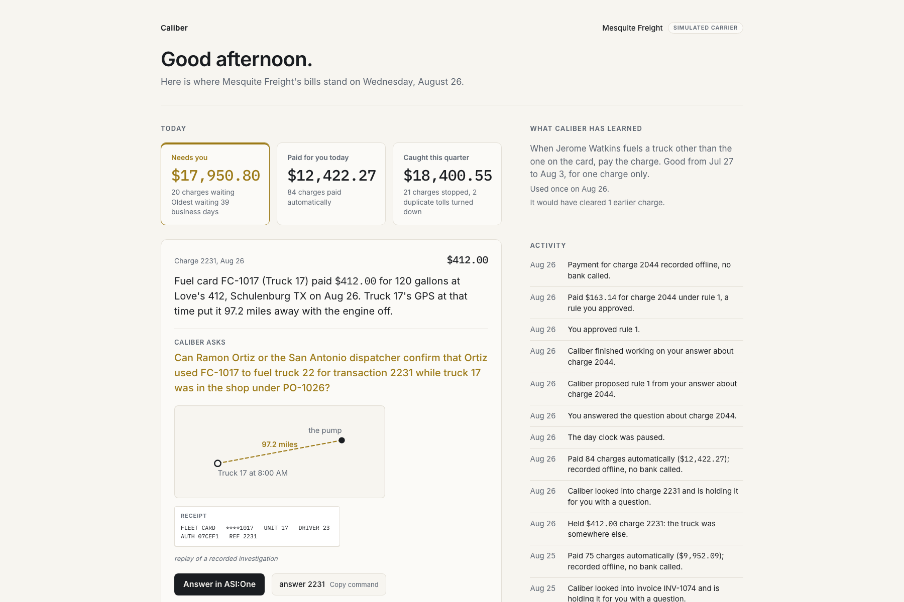

Caliber checks every fuel, toll and repair charge against where the truck was and what the contract said, holds what doesn't match, and asks you once.
Cal Hacks 13.0, October 2026. Simulated carrier. Every figure on this page is read from the measured run.Code decides. The investigator explains. The controller approves. The ledger refuses everything else.

An autonomous accounts-payable clerk for a 40-truck Texas carrier. A kernel written in plain TypeScript, in integer cents, matches every fuel-card charge, toll and maintenance invoice against telematics, tank size, the PO, the contract rate valid that day, receiving records and the vendor's bank details. Clean rows pay themselves within limits and settle at the bank with a transaction id. Anything else becomes a hold.
A read-only Droid session investigates the hold by reading receipts, contracts and the swap log, and by calling two Elastic Agent Builder tools over MCP, and returns a typed finding. When the finding needs a human, the controller is asked on ASI:One, answers in plain language, and the answer becomes a scoped, expiring rule that the database backtests before it is stored and the kernel applies next time.
Segregation of duties is enforced in the database: the agent identity cannot approve a payment, and every action is an append-only audit row.
approve and the reducer refuses, and the refusal is an audit row.| Time | What happened |
|---|---|
| 0 s | The day-41 fuel-card export (61 rows, the shape a card provider sends each morning) lands in the inbox folder. The file connector hands it to the ledger. |
| about 2 s | The kernel matches each row. Clean rows auto-pay within limits. Hold 2231 opens: card FC-1017, assigned to truck 17, bought 120 gallons ($412.00) at Love's 412 in Schulenburg, while truck 17's nearest ping, 13 minutes earlier, was 97 miles away with the engine off. |
| 19.0 s | The Droid finding comes back as typed JSON: truck 22 was at the pump, driven by the same driver, Ramon Ortiz, while truck 17 was in the shop. Only a person can confirm the card use. Recommendation: hold and ask. |
On ASI:One the controller types why 2231, reads the evidence, and answers: answer 2231 Yes. Ortiz drove unit 22 that week while unit 17 was in the shop, per the swap log. | |
| about 2 s | The worker drafts a rule from the answer, scoped to the driver, days 41 to 46, one use, backtested: would have cleared 1 of 1 past rows, 0 of them confirmed exceptions. approve rule 1. The rule clears 2231 and is used up. It never asks that twice. |
| 0.81 s | A controller approval becomes a bank transaction. The reducer checks role and segregation of duties, writes the payment row, and the mock bank's transfer id lands on the audit row 0.81 s after the command. |
Someone tries approve 2231 from the agent's own token. The database refuses: agent may not do this (needs controller). That refusal is an audit row too. |
The carrier is synthetic, generated with a published generator and a hidden answer key of 52 planted errors in 7 classes plus 6 decoys. Nothing in the module, worker, agents or web can read the key. The facts script reads the public tables and the key, and writes the figures below.
| Over the 92-day replay, 7,944 transactions | Result |
|---|---|
| Auto-paid by the kernel or a rule | 7,886 payments, $1,083,630.52 |
| Released by the controller | 8 payments, $32,097.00 |
| 52 planted errors in 7 classes | precision 1.00, recall 1.00 |
| 6 decoys | 6 of 6 cleared by a rule after exactly one answer |
| Planted exceptions cleared by a rule | 0 |
| Refusals recorded in the audit trail | 1, by the agent role |
| Droid, 52 live investigations recorded 2026-10-24 | 25.6 s each on average |
| Claude Sonnet 5.5 alone, same 558 rows, prompt lists the codes | precision 1.00, recall 1.00, $6.38 at list |
| asi1-mini alone, same rows and prompt | precision 0.31, recall 0.81, 101 clean rows held |
The kernel made no model call for the 7,886 lines it paid. A model-alone clerk spends tokens on every line, and its hold-or-clear answer is a sentence, not an audit row. Full method, protocol and limits are in the technical note (4 pages).
@caliber-controller on Agentverse @caliber-investigator on Agentverse Talk to them on ASI:One Code on GitHub Technical note (PDF)
Built with SpacetimeDB (the ledger, the clock and the reducers), Factory's Droid SDK (the investigator), Elastic Agent Builder (the evidence tools over MCP), Fetch.ai uAgents on Agentverse (the two seats on ASI:One) and Capital One Nessie (settlement).